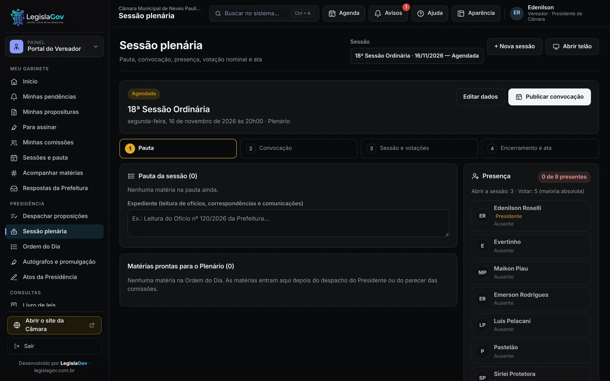
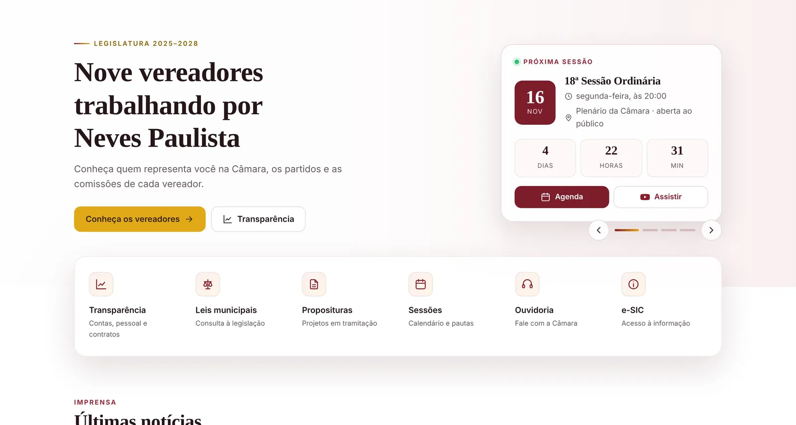
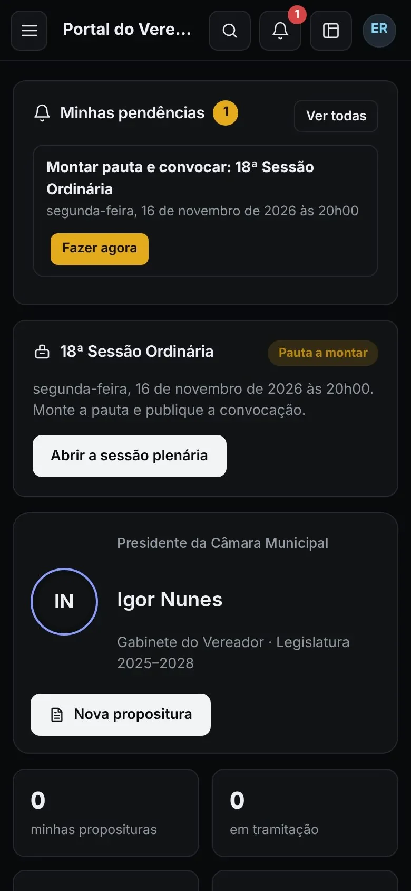

Android
Abra o sistema no Chrome e toque em Instalar app. O ícone da Câmara aparece na tela inicial.
Início Produtos
Cada produto funciona sozinho. Junte os que fizerem sentido para a sua Câmara e tenha um atendimento só para tudo.
Da entrada do documento até a lei publicada. Cada cargo entra direto nas suas tarefas, com prazos e avisos.
Pode ser contratado sozinho, para Câmaras que já têm site.

O site da Câmara e o Portal da Transparência num só lugar, organizados pelas exigências do PNTP.
Pode ser contratado sozinho. Com o Sistema Legislativo, o site se atualiza pelo que acontece na Câmara.

Caixas de e-mail com o domínio da Câmara, para cada servidor e vereador. Nós configuramos e cuidamos.
Pode ser contratado sozinho, mesmo sem o sistema ou o site.
O sistema vira um app na tela do celular: o vereador abre, assina, vota e acompanha as matérias de onde estiver. Sem loja de aplicativos e sem custo extra.
Abra o sistema no Chrome e toque em Instalar app. O ícone da Câmara aparece na tela inicial.
Abra no Safari, toque em Compartilhar e depois em Adicionar à Tela de Início.
Atualizações chegam sozinhas, sem precisar baixar de novo.

Comece com um produto e acrescente os outros quando quiser, sem trocar de sistema nem refazer nada.
| Produto | Só o sistema | Sistema e site | Site e e-mail | Câmara Digital |
|---|---|---|---|---|
| Sistema Legislativo | Incluído | Incluído | Não incluído | Incluído |
| App no celular | Incluído | Incluído | Não incluído | Incluído |
| Site e Transparência | Não incluído | Incluído | Incluído | Incluído |
| E-mail institucional | Não incluído | Não incluído | Incluído | Incluído |
| Migração do sistema, site e e-mails antigos | Sistema | Sistema e site | Site e e-mails | Tudo |
São exemplos de combinação. Valores conforme o tamanho da Câmara e os produtos escolhidos. Ver os planos.
Uma demonstração ao vivo, com a rotina da sua Câmara. Sem compromisso.